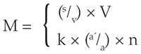

***
Şimdiye kadar olduğu gibi, bu bölümde de, emek gücünün değeri, yani, iş gününün, emek gücünün yeniden üretimi ve korunması için gerekli olan kısmı, veri olan, değişmez bir büyüklük olarak kabul edilecektir.
O halde, bu varsayımla, artık değer oranı verilmiş olunca, aynı zamanda, tek başına bir işçinin belli bir zaman aralığında kapitaliste sağladığı artık değerin kütlesi de verilmiş olur. Örneğin bir günlük gerekli emek, 3 şilin = 1 taler değerinde bir altın kütlesi ile ifade edilen, 6 saatlik bir zaman aralığı olsa, bu durumda 1 taler, bir emek gücünün bir günlük değeri ya da bir emek gücünün satın alınması için yatırılan sermayenin değeri olur. Bundan başka, artık değer oranı %100 ise, bu 1 talerlik değişir sermaye, 1 talerlik bir artık değer kütlesi üretir veya işçi bir günde 6 saatlik bir artık emek kütlesi sağlar.
Ne var ki, değişir sermaye, kapitalistin aynı anda kullandığı bütün emek güçlerinin para ile ifadesidir. O halde, bunun değeri, bir emek gücünün ortalama değeriyle, kullanılan emek güçlerinin sayısının çarpımına eşittir. Demek ki, emek gücünün değeri veri olduğunda değişir sermayenin büyüklüğü aynı anda çalıştırılan işçilerin sayısı ile doğru orantılıdır. Bir emek gücünün bir günlük değeri = 1 taler ise, her gün 100 emek gücünü sömürmek için 100 talerlik, her gün n emek gücünü sömürmek için n talerlik sermaye yatırılmalıdır.
Aynı şekilde: 1 talerlik bir değişir sermaye, yani bir emek gücünün bir günlük değeri, her gün 1 talerlik bir artık değer üretiyorsa, 100 talerlik bir değişir sermaye günde 100 talerlik ve n talerlik bir değişir sermaye de n x 1 talerlik bir artık değer üretir. Demek oluyor ki, üretilen artık değer kütlesi, bir işçinin iş gününün sağladığı artık değer ile çalıştırılan işçi sayısının çarpımına eşittir. Ama bunun ötesinde, bir işçinin ürettiği artık değer kütlesi, emek gücünün değeri veri olmak koşuluyla artık değer oranı ile belirlendiği için, buradan şu birinci yasayı elde ederiz: Üretilen artık değerin kütlesi, yatırılan değişir sermayenin büyüklüğü ile artık değer oranının çarpımına eşittir ya da kapitalist tarafından aynı anda sömürülen emek güçlerinin sayısı ile tek bir işçinin sömürülme derecesinin çarpımı ile belirlenir.[*41]
O halde, artık değer kütlesini M, bir tek işçinin bir ortalama günde sağladığı artık değeri s, bir tek emek gücünü bir günlüğüne satın almak için yatırılan değişir sermayeyi v, toplam değişir sermayeyi V, ortalama bir emek gücünün değerini k, bunun sömürülme derecesini a'/a (artık emek/gerekli emek) ve çalıştırılan işçilerin sayısının ile gösterirsek, şunları elde ederiz:

Buradaki tartışma boyunca, sadece ortalama bir emek gücünün değerinin değişmez bir büyüklük olduğu değil, aynı zamanda bir kapitalist tarafından kullanılan işçilerin ortalama işçiye indirgenmiş oldukları varsayılmaktadır. Üretilen artık değerin, sömürülen işçilerin sayısı ile doğru orantılı olarak artmadığı istisnai durumlar vardır; ama, bu gibi hallerde emek gücünün değeri de değişmez bir büyüklük olarak kalmaz.
Bu nedenle, belli bir artık değer kütlesinin üretimi sırasında bir faktördeki azalma, diğerindeki çoğalma ile telafi edilebilir. Değişir sermaye azalırsa ve artık değer oranı aynı zamanda ve aynı oranda olmak üzere yükselirse, üretilen artık değer kütlesi değişmemiş olur. Kapitalistin, önceki varsayımlarımız doğrultusunda, her gün 100 işçiyi sömürmek için 100 taler yatırması gerekiyorsa ve artık değer oranı da %50 ise, bu 100 talerlik değişir sermaye 50 talerlik, yani 100 x 3 iş saatlik bir artık değer sağlar. Artık değer oranı iki katına çıkarsa veya iş gününün uzunluğu 6 saatten 9 saate yükseltilmek yerine 6 saatten 12 saate yükseltilirse, yarı yarıya azaltılmış olan 50 talerlik değişir sermaye gene 50 talerlik veya 50 x 6 iş saatlik bir artık değer sağlar. Demek ki, değişir sermayedeki azalma, emek gücünün sömürülme derecesindeki orantılı bir yükselişle veya çalıştırılan işçilerin sayısındaki azalma, iş günündeki orantılı uzamayla telafi edilebilir. O halde, sermaye tarafından sömürülebilecek emek arzı, belli sınırlar içinde, işçi arzından bağımsızdır.[211] Tersine, değişir sermayenin büyüklüğü veya çalıştırılan işçilerin sayısı orantılı bir şekilde artarsa, artık değer oranındaki bir düşme, üretilen artık değerin kütlesinde değişikliğe yol açmaz.
Ancak, işçi sayısındaki veya değişir sermaye büyüklüğündeki eksilmenin, artık değer oranındaki artışla veya iş gününün uzatılmasıyla telafi edilmesinin, aşılamayacak sınırları vardır. Emek gücünün değeri ne olursa olsun, yani işçinin varlığını sürdürmesi için gerekli emek-zaman ister 2 saat ister 10 saat olsun, bir işçinin bir günde üretebileceği toplam değer, 24 iş saatinde nesnelleşen değerden, bu nesnelleşmiş 24 iş saatinin para ile ifadesi 12 şilin ya da 4 taler ise, 12 şilin ya da 4 talerden her zaman daha küçük olur. Önceki bir varsayımımıza göre, işçinin emek gücünü yeniden üretmesi ya da onun satın alınması için yatırılan sermaye değerini yerine koyması için günde 6 iş saati gerekiyordu; aynı varsayımla, 500 işçiyi %100'lük bir artık değer oranı ya da 12 saatlik bir iş günü ile çalıştıran 500 talerlik bir değişir sermaye, günde 500 talerlik veya 6 x 500 iş saatlik bir artık değer üretir. %200'lük bir artık değer oranı yani 18 saatlik bir iş günü ile 100 işçi çalıştıran 100 talerlik bir sermaye, sadece 200 talerlik veya 12 x 100 iş saatlik bir artık değer kütlesi üretir. Ve bunun, yatırılan değişir sermaye ile artık değerin toplamına eşit olan toplam değer-ürünü, hiçbir zaman bir günde 400 talerlik veya 24 x 100 iş saatlik bir büyüklüğe ulaşamaz. Ortalama iş gününün, doğal olarak 24 saatten daima küçük olan mutlak sınırı, değişir sermayedeki azalmanın yükseltilmiş artık emek oranıyla veya sömürülen işçi sayısındaki eksilmenin emek gücünün yükseltilmiş sömürü derecesiyle telafi edilmesinin önünde mutlak bir sınır oluşturur. Elle tutulur somutluktaki bu ikinci yasa, daha sonra incelenecek olan ve sermayenin, mümkün olduğu kadar büyük bir artık değer kütlesi üretme eğilimiyle çelişkili olarak, kendisi tarafından çalıştıran işçi sayısını veya emek gücüne çevrilen değişir kısmını mümkün olduğu kadar azaltma eğiliminden kaynaklanan çok sayıdaki görüngünün açıklanması için önemlidir. Tersini ele alalım. Kullanılan iş güçlerinin kütlesi veya değişir sermayenin büyüklüğü artar, ama bu artış artık değer oranındaki düşüş oranında olmazsa, üretilen artık değer kütlesi azalır.
Üretilen artık değer kütlesinin iki faktörle, yani artık değer oranı ve yatırılmış olan değişir sermayenin büyüklüğü ile belirlenmesinden, bir üçüncü yasa elde edilir. Artık değer oranı veya emek gücünün sömürü derecesi ile emek gücünün değeri veya gerekli emek-zamanın büyüklüğü veri olduğunda, pek apaçıktır ki, değişir sermaye ne kadar büyük olursa, üretilen değer ve artık değer kütlesi o kadar büyük olur. Hem emek gücünün sınırı hem de onun gerekli kısmının sınırı verilmişse, tek bir kapitalist tarafından üretilen değerin ve artık değerin kütlesinin, yalnızca, onun tarafından harekete geçirilen emek kütlesine bağlı olacağı açıktır. Ne var ki bu kütle de, verili varsayımlar altında, kapitalistin sömürdüğü emek gücü kütlesine veya işçi sayısına bağlıdır; bu sayı ise onun tarafından yatırılmış olan değişir sermayenin büyüklüğüyle belirlenir. Demek ki, artık değer oranı ve emek gücü değeri veri olunca, üretilen artık değer kütleleri ile yaratılan değişir sermayelerin büyüklükleri ile aynı yönde değişir. Şimdi, biliyoruz ki, kapitalist sermayesini iki kısma ayırır. Bir kısmını üretim araçlarına yatırır; bu, sermayesinin değişmez kısmıdır. Diğer kısmını canlı emek gücüne çevirir; bu kısım değişir sermayesini oluşturur. Aynı üretim tarzı temelinde, farklı üretim kollarında sermayenin farklı oranlarda değişmeyen ve değişir sermaye kısımlarına bölündüğü görülür. Aynı üretim kolunda bu oran, üretim sürecinin teknik temelinin ve toplumsal bileşiminin değişmesiyle birlikte değişikliğe uğrar. Ama belli bir sermaye, değişmeyen ve değişen kısımlarına nasıl bölünürse bölünsün, değişen kısmın değişmeyen kısma oranı ister 1:2 ister 1:10 veya 1:x olsun, bunun biraz önce belirtilmiş olan yasa üzerinde hiçbir etkisi olmaz; çünkü, daha önceki tahlilimizin gösterdiği gibi, değişmez sermayenin değeri, gerçi ürün değerinde tekrar görünür, ama yeni yatırılan değer-ürüne girmez. 1000 iplik işçisi çalıştırmak, şüphesiz, 100 işçi çalıştırmaya göre daha fazla ham madde, iğ vb. gerektirir. Eklenmesi gereken bu üretim araçlarının değeri yükselebilir, düşebilir, değişmeden kalabilir, büyük ya da küçük olabilir; ama bunun, onları harekete getiren emek güçlerinin değerlenme süreci üzerinde yine hiçbir etkisi olmaz. Buna göre, yukarıda saptanmış olan yasa şu biçimi alır: Farklı sermayeler tarafından üretilen değer ve artık değer kütleleri, emek gücünün değeri veriliyse ve sömürü derecesi aynı büyüklükteyse, bu sermayelerin değişir kısımlarının, yani canlı emek gücüne çevrilen kısımlarının büyüklüğü ile aynı yönde hareket eder.
Bu yasa, görünüşe dayanan bütün tecrübelerle açıkça çelişir. Kullandığı toplam sermayesini yüzde olarak hesaplayan bir pamuk iplikçisinin görece çok değişmez sermaye ve görece az değişir sermaye kullandığını, ama bundan ötürü, görece çok değişir sermayeyi ve az değişir sermayeyi harekete geçiren bir fırıncıdan hiçbir zaman daha az kazanç veya artık değer elde etmediğini herkes bilir. %'ın gerçek bir büyüklüğü temsil edebildiğini anlamak için basit cebirde bulunmayan birçok ara terimin gerekli olması örneğinde olduğu gibi, bu görünüşteki çelişkinin çözümü için de daha birçok ara terimin elimizde olması gerekir. Klasik iktisat, bu yasayı hiçbir zaman formüle etmemiş olmamakla beraber, bu yasa genel olarak değer yasasının zorunlu bir sonucu olduğundan, ona içgüdüsel bir şekilde bağlı kalır. Bu yasayı, görünüşteki çelişkilerden, zorlama bir soyutlamayla kurtarmaya çalışır. Ricardo okulunun bu taşa çarptığında nasıl tökezlendiği ileride görülecektir.[212] "Gerçekten de hiçbir şey öğrenmemiş olan" bayağı iktisat, her yerde olduğu gibi burada da, görüngünün yasası yerine görüntüye sarılır. Bayağı iktisat, Spinoza'nın tersine "cehaletin yeterli bir neden olduğuna" inanır.
Bir toplumun toplam sermayesi tarafından her gün harekete geçirilen emek, tek bir iş günü olarak ele alınabilir. Örneğin, işçilerin sayısı bir milyon ve bir işçinin ortalama iş günü 10 saat ise, bu durumda toplumsal iş günü 10 milyon saatten meydana geliyor demektir. Sınırları ister fiziksel isterse toplumsal olarak çizilmiş olsun, bu iş gününün uzunluğu verilmiş iken, artık değerin kütlesi ancak işçi sayısının, yani işçi nüfusunun artması yoluyla artırılabilir. Nüfus artışı burada toplumsal toplam sermaye tarafından gerçekleştirilen artık değer üretimi için matematiksel sınırı oluşturur. Tersini ele alalım. Nüfusun büyüklüğü verilmiş iken, bu sınır, iş gününün ne kadar uzatılabileceğiyle belirlenir.[213] Bundan sonraki bölümde, bu yasanın ancak şimdiye kadar gözden geçirilmiş olan artık değer biçimi için geçerli olduğu görülecektir.
Artık değer üretimi ile ilgili buraya kadarki incelememizden anlaşılır ki, elimizdeki bir parayı veya değeri her istediğimiz zaman sermayeye dönüştüremeyiz; aksine, bu dönüşümün gerçekleşebilmesi için, tek bir para veya meta sahibinin elinde, belli bir asgari miktarda para veya mübadele değeri olması gerekir. Değişir sermayenin asgari miktarı, bütün yıl boyunca artık değer elde etmek için her gün kullanılan tek bir emek gücünün maliyet fiyatıdır. Bu işçi kendi üretim araçlarının sahibi olsaydı ve bir işçi olarak yaşamaktan memnun bulunsaydı, kendi geçim araçlarının yeniden üretimi için gerekli emek-zaman, diyelim bu günde 8 saattir, ona yeterdi. Aynı zamanda, yalnızca 8 iş saati için gerektiği kadar üretim aracına ihtiyacı olurdu. Buna karşılık, işçiye bu 8 saat dışında 4 saat da artık emek harcatacak olan kapitalist, ek üretim araçlarının tedariki için, bir miktar ek paraya ihtiyaç duyar. Ne var ki, varsayımımıza göre, kapitalistin her gün kendisine mal ettiği artık değerle, bir işçi gibi yaşamak, yani zorunlu ihtiyaçlarını tatmin edebilmek için, iki işçi çalıştırması gerekirdi. Bu durumda kapitalistin üretim faaliyetinin amacı zenginliğini çoğaltmak değil, sırf hayatını sürdürmek olurdu; oysa kapitalist üretim demek, bunlardan ilki demektir. Herhangi bir işçiden sadece iki kat daha iyi bir hayat yaşamak ve üretilen artık değerin yarısını sermayeye dönüştürmek için, kapitalistin, işçi sayısı ile birlikte yatırılacak asgari sermaye miktarını sekiz katına çıkarması gerekirdi. Şüphesiz kendisi de, çalıştırdığı işçi gibi, üretim sürecine doğrudan doğruya katılabilir; ama, o bu durumda ne işçi ne de kapitalisttir; ikisi arası bir şey, bir "küçük usta"dır. Kapitalist üretimin belli bir gelişme düzeyi, kapitalistin, kapitalist olarak, yani kişileşmiş sermaye olarak, iş gördüğü bütün zamanı yabancı emek elde etmek ve dolayısıyla yabancı emeği kontrolü altında tutmak ve bu emeğin ürünlerini satmak için kullanabilecek durumda olmasını gerektirir.[214] Orta Çağın lonca sistemi, zanaat ustasının kapitalist haline gelmesini, tek bir ustanın çalıştırabileceği işçilerin sayısının üst sınırını çok düşük tutarak, zorla önlemeye çalışmıştı. Para veya mal sahibinin ilk defa fiilen bir kapitalist haline gelmesi, üretim faaliyeti için yatırılan asgari meblağın Orta Çağın azami meblağını büyük ölçüde aştığı hallerde olur. Hegel'in Mantık'ında keşfetmiş olduğu yasa, doğruluğunu, doğa bilimlerinde olduğu gibi, burada da gösterir: sırf nicel değişiklikler, belli bir noktada, nitel farklılıklara dönüşür.[215]
Para veya meta sahibi bir bireyin kapitalist haline gelmek için elinde bulundurmak zorunda olduğu asgari değer miktarı, kapitalist üretimin farklı gelişme aşamalarında farklılaşır ve belli bir gelişme aşamasında, farklı üretim alanlarında, bu alanların özel teknik koşullarına bağlı olarak yine farklılaşır. Belli üretim alanları, daha kapitalist üretimin başlangıcında, henüz tek tek bireylerin ellerinde bulunmayan bir asgari sermayeyi gerektirir. Bu durum, kısmen, Colbert dönemi Fransa'sında ve bugüne kadar gelmek üzere bazı Alman eyaletlerinde olduğu gibi, bu gibi bireylere devletin yardım etmesine, kısmen de, belli sanayi ve ticaret kollarında[216] yasal tekel olarak faaliyet gösteren şirketlerin, yani modern hisse senetli şirketlerin öncülerinin oluşumuna yol açar.
__________
Üretim sürecinin devamı boyunca kapitalist ve ücretli emekçi ilişkisinin uğramış olduğu değişiklikler ve dolayısıyla bizzat sermayenin diğer oluşum koşulları üzerinde ayrıntılı olarak durmuyoruz. Burada yalnızca birkaç ana nokta belirtilecektir.
Üretim süreci sırasında, görmüş olduğumuz gibi, sermaye emeğe, yani faaliyet halindeki emek gücüne veya işçinin kendisine kumanda edecek hale gelmişti. Kişileşmiş sermaye, yani kapitalist, işçinin işini düzenli bir şekilde ve uygun bir yoğunluk derecesinde yapmasına dikkat eder.
Bunun ötesinde, sermaye, işçi sınıfının, kendi dar ihtiyaçlar toplamının zorunlu kıldığından daha fazla emek harcamasını gerektirecek bir zorlama ilişkisine dönüşmüştü. Başkalarının çalışkanlıklarının üreticiliği, artık emek yutuculuğu ve emek gücü sömürücülüğü söz konusu olduğunda, sermaye, enerji, ölçü tanımazlık ve etkililik açısından, doğrudan doğruya angaryaya dayanan geçmişteki bütün üretim sistemlerini çok gerilerde bırakır.
Sermaye, emeği ilk önce onu tarihsel olarak içinde bulduğu teknik koşullara dayanarak hükmü altına alır. Dolayısıyla, üretim biçimini hemen değiştirmez. Bu nedenle, buraya kadar incelediğimiz biçimiyle, yani basitçe iş gününün uzatılmasıyla gerçekleştirilen artık değer üretimi, üretim tarzının kendisindeki her tür değişimden bağımsız görünmüştü. Artık değerin bu elde ediliş biçimi, eski moda fırıncılıkta, modern pamuk iplikçiliğinde olduğundan daha az etkili değildi.
Üretim sürecini emek süreci açısından ele aldığımızda, işçi, üretim araçlarını, sermaye olarak değil, yalnızca, belirli bir amaç doğrultusundaki üretici faaliyetinin araçları ve malzemesi olarak görmüştü. Söz gelişi, bir tabakhanede, işçi, deriyi yalnızca kendi emek nesnesi olarak görür. Deriyi kapitalist için tabaklamaz. Üretim sürecine değerlenme açısından baktığımız anda işler değişti. Üretim araçları hemen başkalarının emeğini emme araçlarına dönüştü. Artık, işçi üretim araçlarını kullanmamakta, üretim araçları işçiyi kullanmaktadır. Bunlar, işçinin üretici faaliyetinin maddi unsurları olarak işçi tarafından tüketilmek yerine, işçiyi kendi yaşam süreçleri için gerekli bir maya olarak tüketir ve sermayenin yaşam süreci, kendi kendini değerlendiren değer olarak hareketinden ibarettir. Geceleri çalıştırılmayan ve bu yüzden canlı emek yutamayan eritme fırınlarındaki ve iş yerlerindeki boş zamanlar, kapitalist için bir "net kayıp" ("mere loss") oluşturur. Eritme fırınları ve iş yerleri işte bu nedenle emek güçlerinin "gece çalıştırılması hakkı"nı ortaya çıkarır. Paranın, üretim sürecinin nesnel faktörlerine, üretim araçlarına dönüşmesi, tek başına, bu sonuncuları, başkalarının emekleri ve artık emekleri üzerindeki haklara ve zorlama araçlarına dönüştürür. Kapitalist üretime özgü olan ve onu nitelendiren bu tersine dönüşün, ölü emekle canlı emek, değerle değer yaratıcı güç arasındaki ilişkinin bu tam tersine çevrilişinin, kapitalistlerin bilinçlerinde nasıl yansıdığını, konuya son verirken, bir örnekle gösterelim. İngiliz fabrikatörlerinin 1848-1850 yılları arasındaki ayaklanmaları sırasında, "Batı İskoçya'nın en eski ve en saygıdeğer firmalarından bir olan ve 1752'den beri faaliyet halinde olup kuşaktan kuşağa aynı aile tarafından yürütülen Paisley'deki Carlile Sons & Co. keten ve pamuk ipliği fabrikasının başı" olan bu son derece zeki ve kavrayışlı centilmenin 25 Nisan 1849 tarihli Glasgow Daily Mail'de "Posta Değiştirme Sistemi" başlıklı bir mektubu[217] çıkmıştı; bu mektupta aşağıdaki acayipçe saf pasajı da görüyoruz:
"Çalışma süresinin 12 saatten 10 saate indirilmesinden doğacak kötülükler üzerinde durmamıza izin verin. ... Böyle bir şey, fabrikatörün ümitlerinin ve mülkünün en ciddi zararlara uğramasına yol açacaktır. O" (yani onun işçisi) "daha önce 12 saat çalışırken çalışma süresi 10 saate indirilirse, bu durumda fabrikatörün tesisinin her 12 makinesi veya iği 10'a iner (then every 12 machines or spindles, in his establishment, shrink to 10) ve fabrikatör fabrikasını satmaya kalksa, bunlara artık yalnızca 10 olarak değer biçilir ve böylece bütün ülkedeki fabrikaların her biri şimdiki değerinin altıda birini kaybeder."[218]
Kuşaklar boyu birikmiş kapitalist niteliklerin mirasçısı olan bu Batı İskoçyalı burjuvanın kafasında, üretim araçlarının, tezgâhların vb. değerleri, bunların sermaye olarak kendi kendilerini değerlendirme veya her gün belli bir miktarda yabancı emeği karşılığını ödemeden yutma özelliği ile öylesine ayrılmaz bir şekilde karışmış bulunur ki, Carlile & Co. firmasının şefinin gerçekte hayal ettiği şey, fabrikasını satarken kendisine sadece tezgâhlarının değerinin değil, buna ek olarak, bunların artık değer yutma güçlerinin karşılığının ödenmesidir; sadece bu şeylerde saklı bulunan ve aynı tip tezgahların yapımı için gerekli olan emeğin karşılığının verilmesi değil, Paisley'li uysal İskoçlardan her gün sızdırılmasına yardımcı oldukları artık emeğin karşılığının da verilmesidir; ve işte bu nedenle, bu kişi, iş gününün iki saat kısaltılmasıyla, 12 makinenin satış fiyatının 10 makinenin satış fiyatına düşeceğini düşünebiliyor!